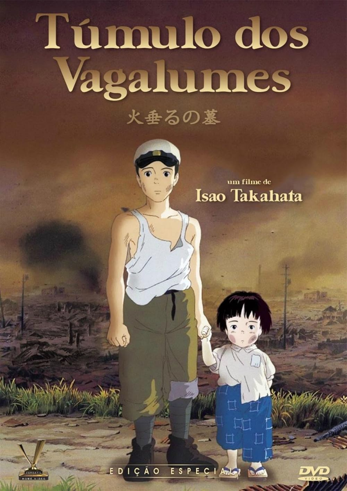

Homem-Aranha Através do Aranhaverso

- Data de lançamento: 1 de junho de 2023 (Brasil)
- Diretores: Joaquim Dos Santos, Kemp Powers, Justin K. Thompson
- Duração: 2h 20m
- Gêneros: Ação, Comédia, Filme de super-herói, Ficção científica, Aventura, Fantasia, Animação digital, Drama, filme familiar
- Continuação:Homem-Aranha: Além do Aranhaverso
- Autor:Brian Michael Bendis
Sinopse:
Depois de se reunir com Gwen Stacy, Homem-Aranha é jogado no multiverso. Lá, o super-herói aracnídeo encontra uma numerosa equipe encarregada de proteger sua própria existência.
Túmulo dos Vagalumes

- Data de lançamento: 24 de novembro de 1989 (Brasil)
- Diretor:Isao Takahata
- Distribuidores:Toho Co., Ltd., Studiocanal UK
- Cinematografia:Nobuo Koyama
- Diretor de Arte:Nizou Yamamoto
- EdiçãoTakeshi Seyama
Sinopse:
Os irmão Setsuko e Seita vivem no Japão em meio a Segunda Guerra Mundial. Após a morte da mãe em um bombardeio e a convocação do pai para a Guerra, eles vão morar com alguns parentes. Insatisfeitos, saem da cidade e acabam em um abrigo na floresta.
One Piece Film: Red
- Data de lançamento: 22 de julho de 2022 (Brasil)
- Diretor:Gorō Taniguchi
- Autor:Eiichiro Oda
- Duração:1h 55m
Sinopse:
Uta, a cantora mais popular do mundo, vai se apresentar em um palco e revelar sua aparência pela primeira vez. Luffy e seus amigos comparecem ao show e percebem que a voz de Uta é capaz de mudar tudo.